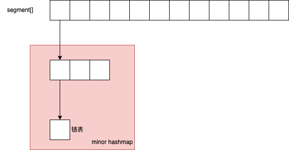

语言基础
什么是面向对象?
面向对象关注于完成一件事情需要哪些步骤,步骤之间的执行顺序.
面向对象关注于完成一件事情需要哪些模块参与, 模块与模块之间的关系.
面向对象的三大特征: 封装、继承、多态
封装: 对象的属性不对外暴露, 暴露操作属性的方法.
继承: 子类继承父类, 对父类进行功能扩展.
多态: 基于对象所属类的不同, 外部对同一个方法的调用, 实际执行的逻辑不同.
重写和重载的区别
重载: 发生在同一个类中, 方法名必须相同, 参数类型不同, 个数不同, 顺序不同, 方法返回值和访问修饰符可以不同, 发生在编译时
重写: 发生在父子类中,方法名、参数列表必须相同, 返回值范围小于等于父类(返回值类型必须为父类返回值的派生类), 抛出异常范围小于等于父类, 访问修饰符大于等于父类; private 方法不能重写.
concurrentHashMap
底层实现
jdk 1.7

按 segment 来加锁, 避免锁冲突.
扩容: 按照 segment 来扩容, 复制到新数组, 然后头指针指向新数组.
jdk 1.8
支持多线程扩容: 不同线程负责不同范围的数据的转移, 扩容过程中, 如果有线程要 put, 先去帮忙扩容
HashMap
jdk 1.7
数组+链表
链表解决哈希冲突
链表插入是头插法
复杂的散列算法 - 尽可能地减少哈希冲突
插入过程
- 根据 key 通过哈希算法得出数组下标
- 如果数组下标位置为空, 封装 Entry 对象, 放在当前位置
- 如果数组下标位置不为空, 则判断是否需要扩容, 不扩容就生成 Entry 对象, 使用头插法插入元素
- 插入需要遍历链表看 key 是否存在, 存在即更新value
jdk 1.8
数组+链表+红黑树
红黑树: 提高插入和查询效率
链表插入是尾插法
因为 1.8 中插入 key 和 value 时需要判断链表元素个数
使用简单的散列算法代替 jdk1.7 中复杂的散列算法, 因为红黑树查询效率很高
插入过程
- 根据 key 通过哈希算法得出数组下标
- 如果数组下标位置为空, 封装 Entry 对象, 放在当前位置
- 如果数组下标位置不为空, 判断数组当前位置的 Node 是链表还是红黑树类型
- 如果是红黑树, 添加到红黑树里面. 如果红黑树为包含当前 key, 则更新 value
- 如果为链表, 则使用尾插法, 插入, 同样需要遍历链表看是否有相同 key, 最后在链表尾部插入, 同时判断长度是否 >= 8, 如果是, 则转换为红黑树
- 最后判断是否需要扩容, 如果不需要就结束 PUT, 需要就参与扩容
扩容机制
jdk 1.7
- 先生成新数组
- 遍历老数组中的每个位置上的链表上的每个元素
- 取每个元素的key, 并基于新数组长度, 计算出元素在新数组中的下标
- 将元素添加到新数组中
- 所有元素转移完后, 将新数组复制 HashMap 的 table 属性
jdk 1.8
- 先生成新数组
- 遍历老数组中的每个位置上的链表或红黑树上的每个元素
- 如果是链表, 重新计算下标, 放到新数组中
- 如果是红黑树, 先遍历红黑树, 计算出红黑树中每个元素对应在新数组中的下标位置
- 统计每个下标位置的元素个数
- 如果元素个数超过了 8 , 生成一个新的红黑树, 将根节点添加到数组对应位置
- 如果元素个数小于 8, 生成一个链表, 并将链表头节点添加到数组对应位置
- 所有元素转移完后, 将新数组复制 HashMap 的 table 属性
深拷贝和浅拷贝
浅拷贝: 拷贝基本数据类型的值以及实例对象的引用地址
深拷贝: 拷贝基本数据类型的值和实例对象引用地址所指向的对象进行复制
一句话: 拷贝出来的实例, 其对象类型的成员变量是不是同一个.
JVM
组成部分
类装载子系统、字节码执行引擎、JVM运行时数据区
字节码文件反编译 javap
JVM运行时数据区包含 堆、栈、本地方法栈、元空间、程序计数器
JVM 运行时数据区
栈: 局部变量、操作数栈、动态链接、方法出口
操作数: 比如 1 + 2 这个加法操作, 1 和 2 就是操作数, 运算之后的结果 3 也是一个操作数
程序计数器: 存储马上要运行的代码的位置(内存地址)
为什么需要程序计数器? 比如当前线程被其他线程打断挂起, 线程恢复之后需要从挂起的位置继续执行, 需要需要程序计数器去记录这个位置
程序计数器是谁设置的呢? 字节码执行引擎根据方法区当中存储的类信息执行引擎动态修改的.
动态链接: 将符号引用转为直接引用
符号: 变量名、方法名
举个例子: 将方法名转为指向方法区对应方法存储的内存地址
方法出口: 指向调用完当前方法的返回地址
GC
谁去执行 GC 操作?
字节码执行引擎会在后台开一个垃圾收集线程
JVM 可视化工具: jvisualvm
Arthas: JVM 调优工具
JVM 调优目的: 减少 STW 的时间
对象大小怎么评估?
所有成员变量占用空间之和
能否对 JVM 调优, 让其几乎不发生 FGC
目的, 尽量让垃圾对象在 YGC 的时候就 GC 掉, 不要晋升到老年代
施工中...